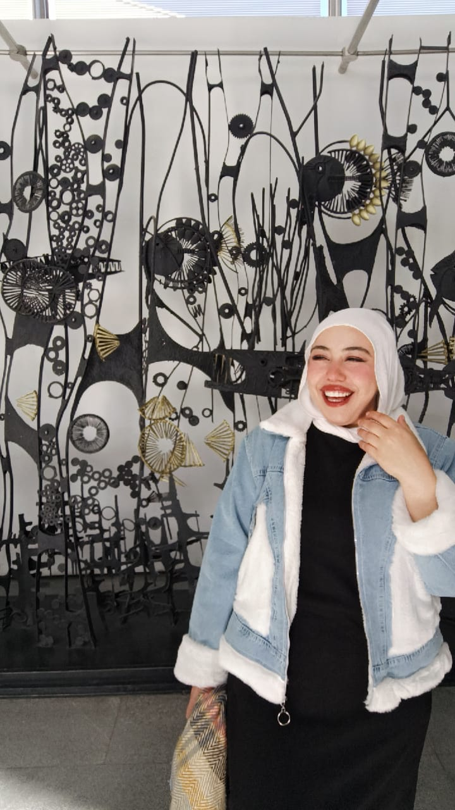
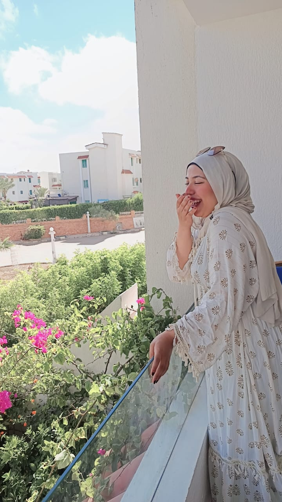

Happy Birthday, my dear sister. Thank you for every laugh, every memory and every moment we've shared. I pray this year brings you endless happiness good health, and success. You deserve nothing but the very best. I love you so much.
Chapter I
Happy birthday Dera
Why does he have a brother like Hadeer He's lucky
Chapter III
The Archive
Hover to unseal the fragments.
Best sister
The greatest, most beautiful, and sweetest sister in the world is getting a year older..
Dr. Hadeer
Wishing you a year full of happiness, success, and love
My close friend
No matter how much we grow up, you'll always be my favorite sister and my best friend
(●'◡'●)
The art of bending without breaking.
(❁´◡`❁)
Memories with you are definitely sweeter
Chapter IV
❤️💕
😍🥰
Zenith
Chronology
Happy Birthday! Stay happy, stay blessed, and keep shining.
The realization of power, grace, and unapologetic presence.
Memories
The Moments


Chapter V
Happy Birthday
Long press the void for a revelation.